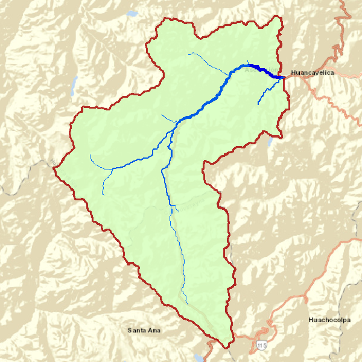
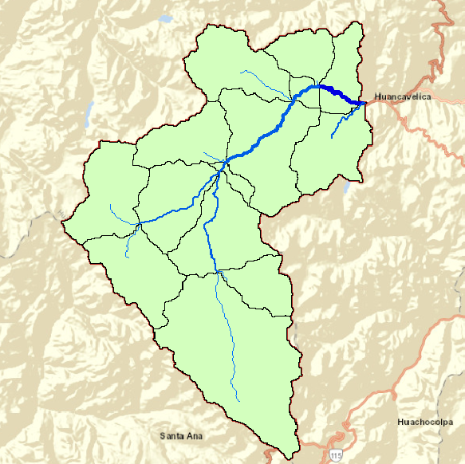
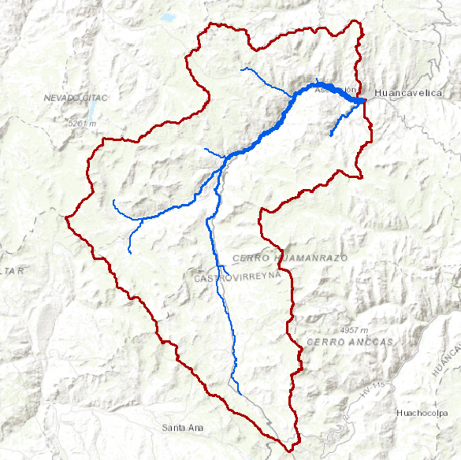
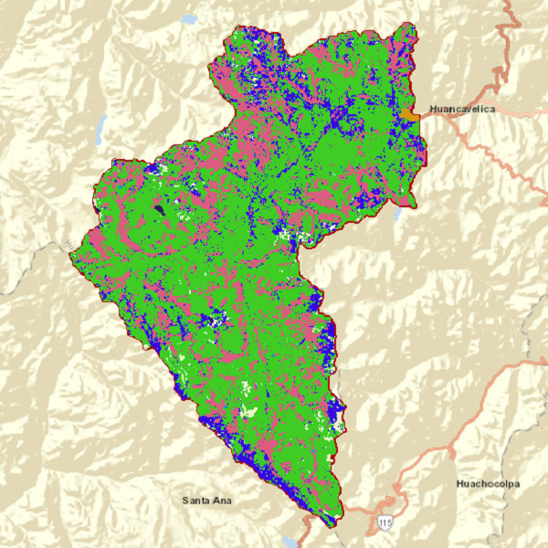
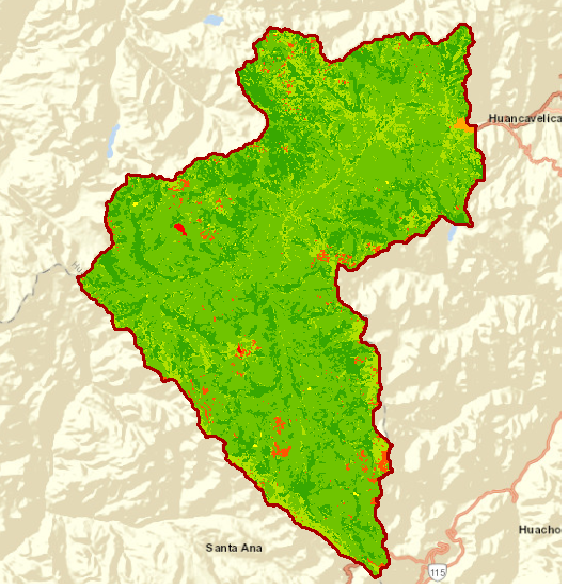
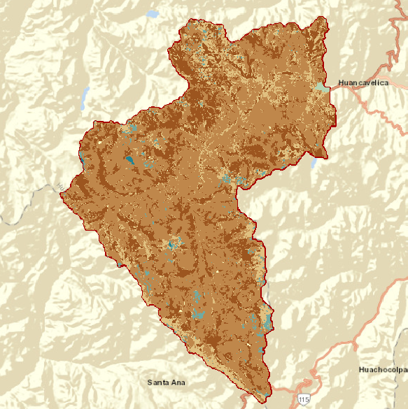

Outline
This image shows the boundary for Upper Ichu River watershed. WHIS has been currently set to investigate implementation of conservation practices in this catchment area of the UIRW Watershed.
Sub-basin
This image shows all the 14 sub-basins in the watershed identified using the Peru National Water Authority database. These sub-basins are connected to each other based on the topography and are used to calculate the flow of water from upstream areas to downstream areas.
Streams
This image shows the various streams and tributaries (and some main ditches),that build the stream network of Upper Ichu River Watershed.
Potential Storage
This image shows the various sites (depicted by polygons) on agricultural land where runoff will tend to accumulate because of depression in the topography, and low infiltration properties of the soil. Though the landscape also has many smaller sites where runoff accumulation can occur,this image only shows sites with areas of polygons greater or equal to 1000 square meters (i.e. 0.25 acres). These sites provide excellent opportunities for creating water storage practices such as wetlands, ponds, etc. that slow, store, and treat runoff. This helps in not only preventing erosion and fertilizer losses, but also helps improve availability of water in the landscape for crop use during dry seasons.
Land Use
This image shows the land use land cover in the Upper Ichu River Watershed, observed in 2008. The data for this image was obtained from the Peru National Water Authority – Natural Resources Conservation Service.
Soil
This image shows the various soil types and their drainage characteristics in the Upper Ichu River Watershed.